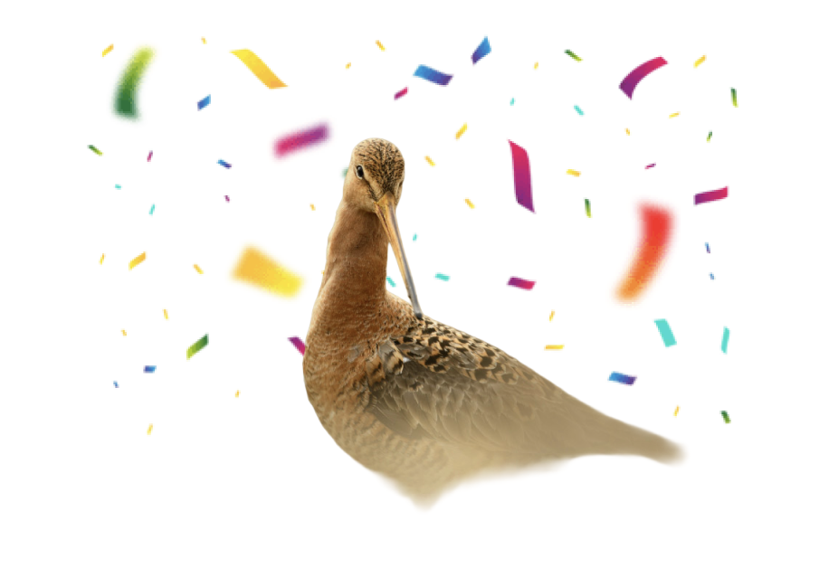

Je hebt gedoneerd, dankjewel!

Laat zien dat jij natuur ondersteunt
Help ons meer mensen te bereiken door jouw bijdrage te delen.
Je gratis pak Boeren van Amstel melk staat voor je klaar
Laat de QR-code zien bij een van onze verkooppunten en ontvang jouw gratis pak melk. Je vindt de QR-code in jouw inbox.